Teil 2 · Didaktik 2.2 · Generation a3ce3d7f1e8f82b2

Kajo bewahrt bereits berechnete Keys und Values je Stockwerk und Position auf. Bei der Morgenflut wird der Prompt verarbeitet; danach ergänzt jeder Antwortschritt neue K/V-Paare. Frühere Paare können erneut verwendet werden. Das spart Projektionen, braucht aber Speicher. Der Cache ist ein Zwischenspeicher laufender Rechnung. Eine Notiz der Anwendung ist etwas anderes: Sie muss als Text wieder auf den Tisch gelegt werden und belegt dann Kontextplätze.
Zähle neu berechnete K/V-Paare mit und ohne Wiederverwendung. Vergleiche anschließend Kontextbudget, Cachegröße und Speicherformate.
Mit Cache werden frühere K/V-Projektionen wiederverwendet. Q/K-Vergleiche und weitere Operationen bleiben nötig. Mehr Positionen, Stockwerke oder Köpfe brauchen zusätzlichen Speicher. Der Cache erweitert das Kontextfenster nicht; sein Lebenszyklus und seine Aufbewahrung gehören zur Anwendung.
Frage, ob etwas als K/V-Rechnung, aktueller Kontexttext oder äußere Notiz vorliegt. Verwechsle eine gespeicherte Rechnung nicht mit Gewichtstraining oder einem privaten Langzeitgedächtnis.